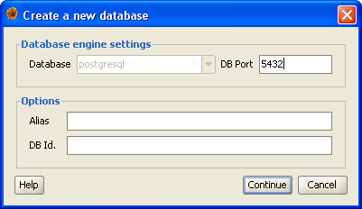
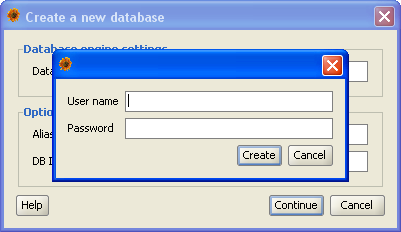

Creating new database
In order to work with the occurrence data after Plantlore is installed, it is neccessary to create database where the data will be
stored (in case you are using local connections to the database). For remote connections (over a computer network) you do not have
to create new database after installation is finished. Plantlore allows you to work with multiple databases on one server and
therefore it is neccessary to have the option to create new databases. The reason for having more than one database can be for
example separation of data from different projects or institutions. The number of databases and their usage is up to you.
Plantlore offers simple user interface for creating new databases which is accessible from the main application menu Data|Create
new database

Important warning: Because of security reasons it is only possible to create new database using local connection to the database.
Also make sure that there's no other program using the PostgreSQL database system while you create new database.
In this dialog you have to input basic information about the database system you are using and the new database.
- Database - Type of the database system you are using. In current version only PostgreSQL database is supported
- DB Port - Port where the database system is running. This field contains the default port for the selected database system
- Alias - Description of the new database which will be used when logging in (this will be automatically
added to the Login dialog where you choose the database once the database is created)
- Database identifier - Name of the database itself. Make sure there is no other database with this name. The
name can only consist of alfanumeric characters (A-Z, a-z, 0-9)
After the Next button is pressed the authentication dialog will show up and you have to input login and password for
connecting to the database system.

Creating new databaze right after Plantlore installation
In case you create new database right after the Plantlore installation finished, use authentication data you entered during the installation (the one for database user). Plantlore will grant this user to administrative priviliges for the new database and
you can create other users of this database.
Creating new database in already running system
In case you create new database in a system where there are other databases, you should still use the original database user used for creating new database.
Once the database is successfuly created you are informed by a messege window and you can login to your new database right away.